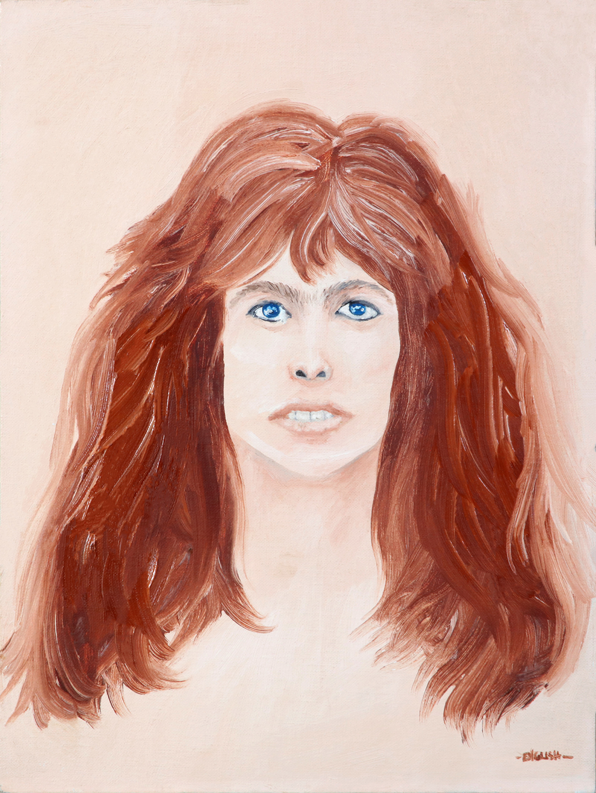

Steven Tyler Portrait
Home
1970s

Title:
Steven Tyler Portrait
Date:
c. 1976
Medium:
Acrylic on canvas
Dimensions:
12 × 16 in
Work ID:
RE-000207
Signature / marks:
Signed “Ron English,” lower right.
Notes
Date and dimensions are estimated.